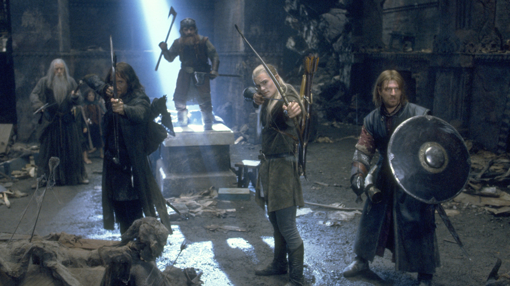
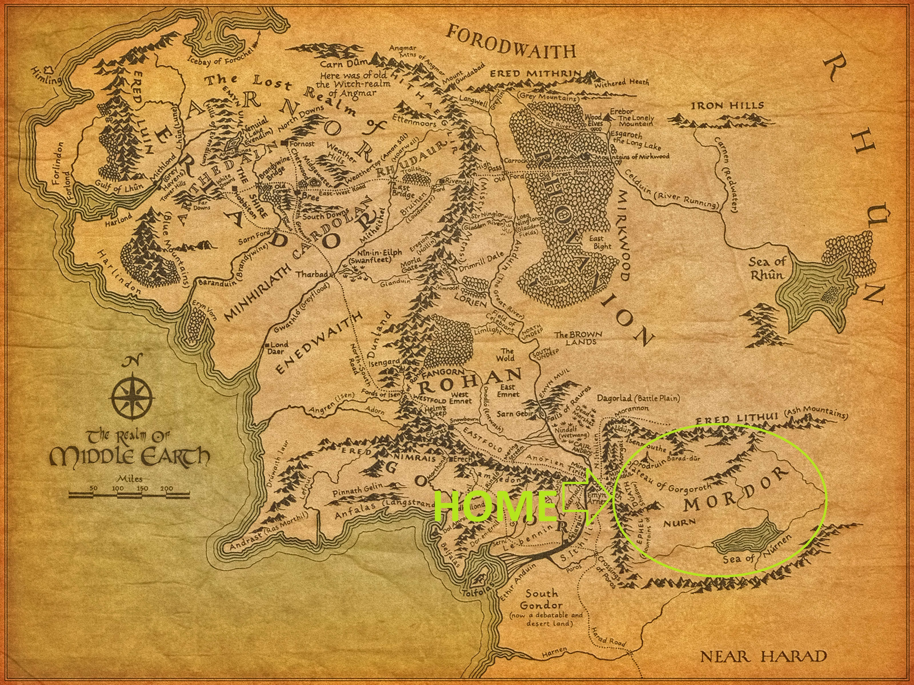
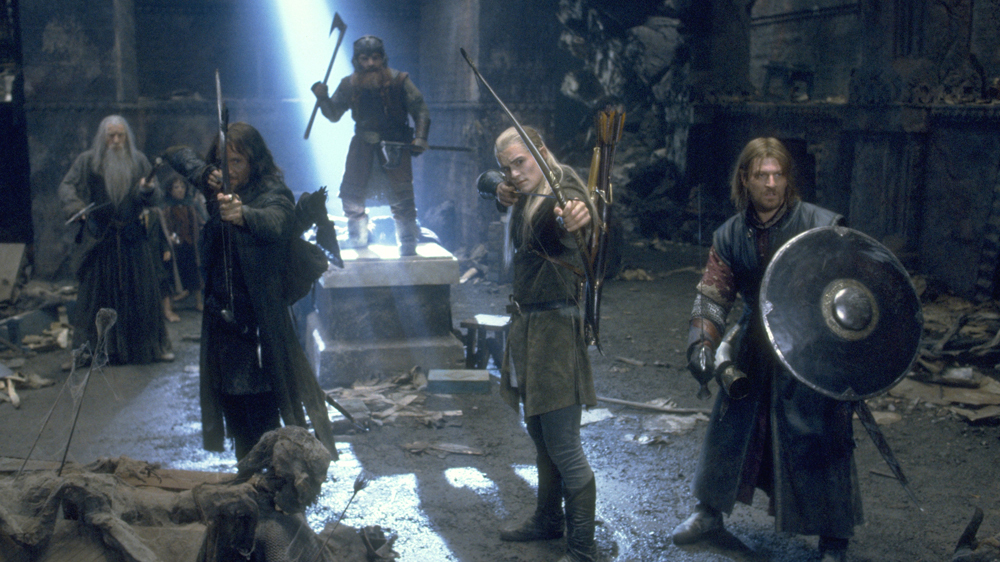

Sauron's Photos
Me:

My Pet:
My Enemies:
Me And Friends:
I am The Lord of The Rings , Sauron AKA The Lord of Mordor , The Dark Lord , The "Eye" , the Creator of the one ring and the most trusted lieutenant of my master Melkor (Morgoth, the first Dark Lord) , My goal is to strove to conquer Arda by creating the Rings of Power. During the battle, Isildur managed to cut off my finger with the Ring on it, causing the destruction of my corporeal form. After spending hundreds of years lying dormant, slowly regaining strength, I returned to power in the Third Age, but was then permanently defeated in the War of the Ring through the destruction of the One Ring by Frodo Baggins.
Me:
My Pet:
My Enemies:
Me And Friends:
Here is my favorite playlist :
Please send this to your friends :
Scan:
Answer 1 : Web 1.0 is simply an information portal where users passively receive information without being given the opportunity to post reviews, comments, and feedback. The main difference between t is that in web 2.0 the user changed his relationship with the web and become a producer of knowledge and could reply and review through site like facebook and youtube . Web 2.0 facilitates interaction between web users and sites, so it allows users to interact more freely with each other In Web 3.0 the web is more suitable to the users , by recommandation systems thats learns users behaviors .
Answer 2 :
Web 1.0 : The user search in a query "Drug side effects"
The answer : get a list of static websites with explanations
Web 3.0 :The user search in a query "Drug side effects"
The answer : list of sites that realsay on users posts for drug side effects , the user see other posts like his which indexed and
organized in unified medical DB